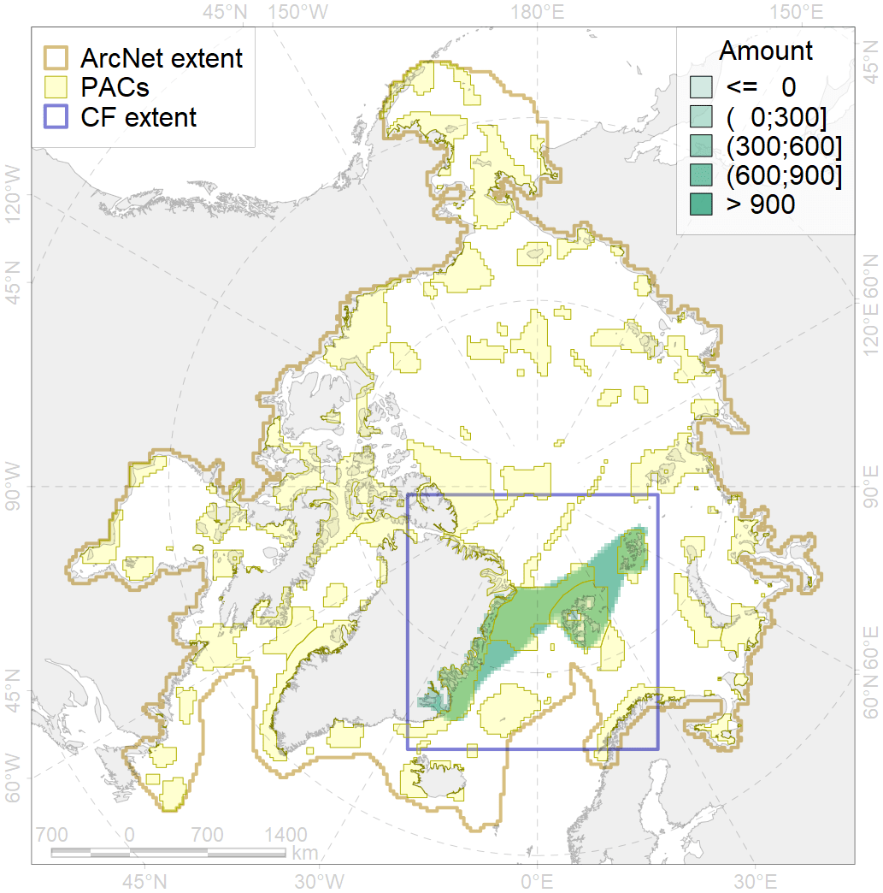
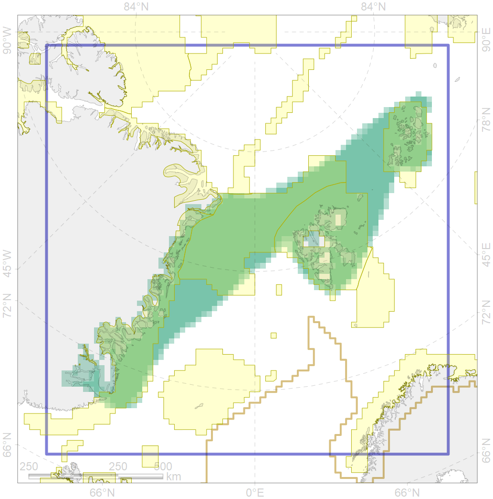

5045

| CF ID | 5045 |
| CF Name | Bowhead whale of the Spitsbergen population core distribution |
| Time Period | 1940-2014 |
| Source(s) | Gilg and Born 2005; Boertmann and Nielsen 2009; Wiig et al 2010; Blijleven & Van Dijk 2011; Lydersen et al 2012; Boertmann et al 2015; Gavrilo 2015; Goryaev 2017; Storrie et al 2018; Hansen 2018 presentations |
| Seasonality | January-December |
| Depth Horizon | 0-250 |
| Methodology | Satellite tagging, aerial and ship surveys |
| Author Name | Filatova |
| Notes | |
| Conservation Target Set in the Scenario | 0.744 |
| Conservation Target Achieved in the Scenario | 0.744 (Scenario: 100.0%) |
| PAC ID | Proportion in the PAC | Contribution to ArcNet Target Achievement | PAC’s Contribution to the Achieved Target |
|---|---|---|---|
| 22 | 8.4% | 10.9% | 10.9% |
| 29 | 31.8% | 41.0% | 41.0% |
| 30 | 18.1% | 23.7% | 23.7% |
| 32 | 15.2% | 19.8% | 19.8% |
| 33 | 0.4% | 0.6% | 0.6% |
| inner | 74.0% | 96.1% | 96.0% |
| outer | 26.0% | 4.0% | 4.0% |